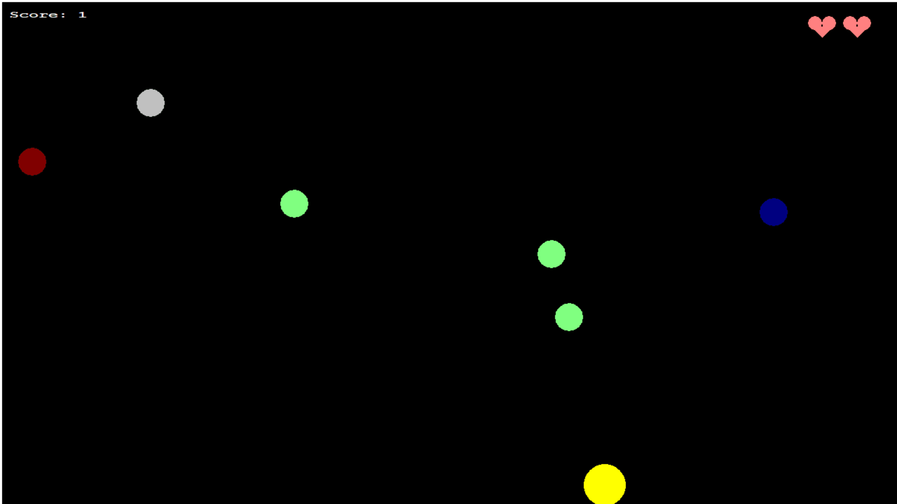
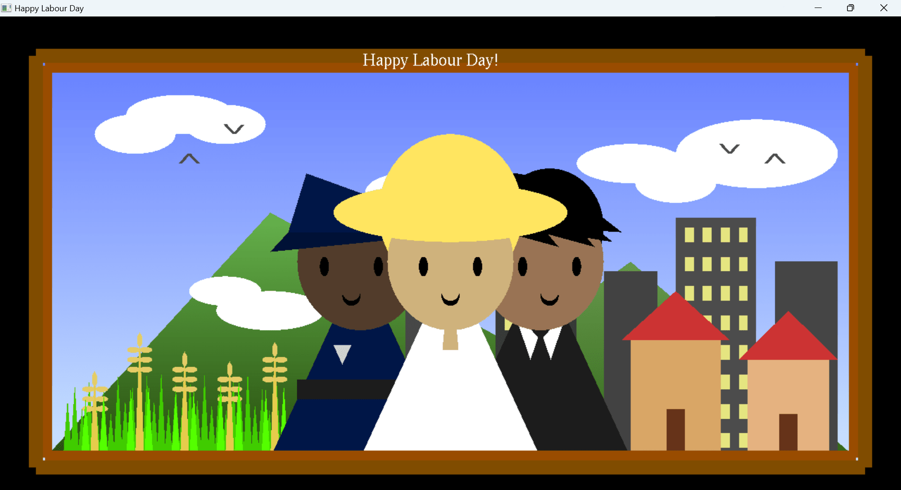
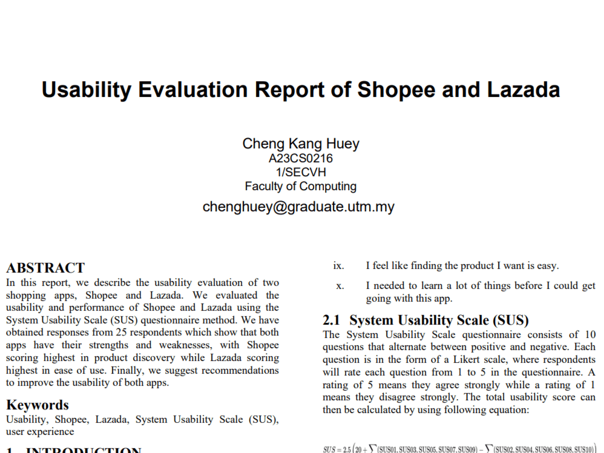
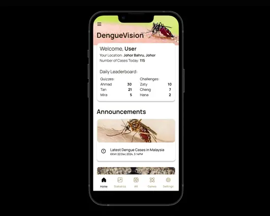

My Projects
This page showcases the projects I worked on over the past few years.

A project I worked on with my team in the Programming Technique 2 course in Year 1. It is a game where players catch falling items to collect points. Once their score hits 10, they win. If players lose all health, they lose the game. Powerups such as speed and health boosts help players win the game.
To view this project, please visit this Github page.

A project I did in the Fundamental of Computer Graphics course in Year 2. It is created using the OpenGL library and its functions in Visual Studio.
To view this project, please visit this Github page.

This research was conducted for the Human Computer Interaction course in Year 1. In this report, I evaluated the usability of two shopping apps, Shopee and Lazada. The performance of both apps are evaluated using the System Usability Scale (SUS) questionnaire method.
To view this project, please visit this Github page.

I designed and created this prototype for the Software Engineering course in Year 2. It was made in Figma, a collaborative interface design tool. This prototype shows the basic features and functions of the DengueVision app.
To view this project, please visit this Figma page.